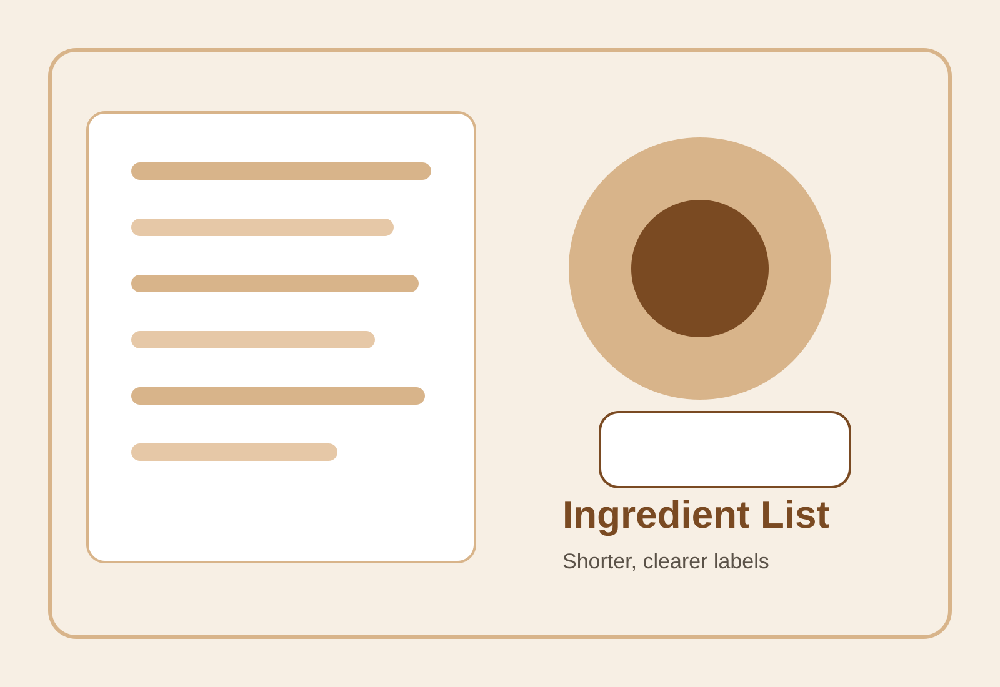
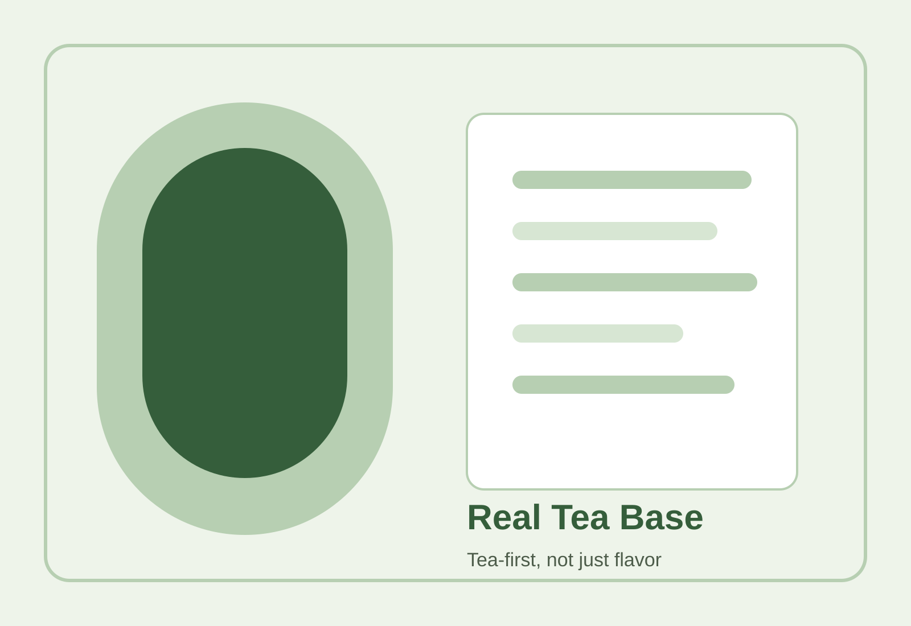

Fresh tea drinks trend feature
One of the clearest live discussions in Chinese beverage culture right now is no longer only about whether a drink tastes good or whether a brand is fashionable. It is about whether a drink can explain itself. Consumers increasingly want to know what the tea base is, how much of the drink feels “real,” how long the ingredient list runs, and whether “lighter burden” is a meaningful description or simply a marketing tone.
This shift matters because it changes the grammar of modern tea consumption. For years, Chinese tea chains competed primarily through novelty, sweetness, packaging, queue heat, collaborations, visual identity, and the social-media life of the cup. Those things still matter. But a new layer has become impossible to ignore: credibility. If a brand says a drink is tea-forward, low-burden, cleaner, or more natural, consumers increasingly expect some visible structure behind those claims.
That is why ingredient-list transparency has become such a powerful topic. It is not only a technical nutrition question. It is also a trust question, a branding question, and a cultural question. Modern tea drinks once thrived on aspiration and excitement alone. In 2026, many consumers want aspiration plus legibility. They still want a treat, but they want that treat to feel intelligible.

The current wave of discussion did not appear from nowhere. It sits at the intersection of several pressures. Consumers are more used to reading labels than before. Social platforms have normalized talking about sugar, additives, sweeteners, milk bases, calorie load, and “cleaner” formulas. At the same time, the tea-drink category has matured. Once a market becomes crowded, brands cannot rely forever on just visual freshness or limited-edition hype. People begin asking harder questions: what am I actually drinking, and why should I trust this chain more than another one?
This is especially important in tea drinks because tea carries a built-in promise of authenticity. The word “tea” implies leaf, brewing, aroma, and some relationship to a plant-based origin. The farther a product feels from that promise, the more pressure brands face to explain themselves. Ingredient-list discourse is one way consumers push back against vague or inflated tea language.
When consumers say they want a real tea base, they are not always making a laboratory claim. Often they are reaching for a more intuitive distinction: does this drink feel built around tea, or does tea merely function as decorative branding around sugar, milk, fragrance, or texture? That difference matters because it affects how the drink is categorized in the mind. A tea-led drink feels more defensible as a daily habit. A drink that uses tea only as atmosphere feels easier to dismiss as a dessert in disguise.
This is one reason brands increasingly emphasize original tea leaves, fresh brewing, recognizable tea styles, and more explicit references to oolong, black tea, jasmine tea, or green tea. The stronger the “real tea” signal, the easier it becomes to frame the drink as something more grounded and less synthetic-feeling. Consumers are not always experts, but they are increasingly sensitive to whether a product has a visible center of gravity.

In strict technical terms, many consumers cannot fully evaluate additives, processing aids, stabilizers, or flavor structures. But they do not need perfect technical fluency in order for the topic to matter culturally. The shorter and clearer an ingredient list looks, the easier it is for consumers to feel safe. The more industrial or opaque the language becomes, the more suspicion rises. That suspicion is intensified by the fact that tea-drink purchases are often frequent and habitual. The question is not just whether one cup is acceptable. It is whether this can become part of everyday life without psychological friction.
That is why “fewer additives” functions as a trust technology. It lowers narrative resistance. It tells the buyer: you do not have to negotiate too much with yourself before drinking this. In an anxious consumer environment, that message is extremely powerful. People still want indulgence, but they increasingly want indulgence that comes with a plausible defense.
This trend pushes brands into a new competitive zone. It is no longer enough to say a drink is modern, premium, or tea-inspired. A chain increasingly has to look explainable. That means naming matters differently, menu language matters differently, sourcing claims matter differently, and even cup-side communication matters differently. The brand has to appear less like a black box and more like a system the consumer can understand at a glance.
In practical terms, this does not mean every chain becomes radically transparent overnight. But it does mean opacity now carries a bigger reputational cost than before. The brands that benefit most from this shift are not always those with the loudest wellness rhetoric. They are often the ones whose products, labels, and public language fit together more coherently.
Tea has a special symbolic advantage in Chinese consumption culture. It can carry ideas of restraint, balance, naturalness, refinement, and habit. Modern tea drinks are commercially powerful partly because they borrow that symbolic reserve even when sold in fast, branded, mall-based formats. Ingredient-list transparency strengthens that borrowing. It helps chains renew the promise that tea drinks are not merely sweet beverages wearing tea-themed clothing.
This is why the same topic feels especially potent in tea culture. A tea drink that sounds overbuilt, vague, or too dependent on hidden structure risks disappointing not only health-conscious consumers, but also consumers who care about tea identity itself. The demand for transparency is therefore not just nutritional anxiety. It is also a demand that the category remain believable as tea.
Yes and no. Consumers are definitely more literate in the language of ingredients, sugar, and product burden than before. But they are not turning into full nutritional auditors. What is growing faster is interpretive behavior: the desire to sort drinks into intuitive moral categories such as cleaner, lighter, more real, less fake, easier to justify, or too processed. In that sense, ingredient-list transparency is not the death of branding. It is a new form of branding.
The winning brands will be the ones that understand this subtle shift. People are not asking brands to become emotionless technical documents. They are asking brands to make the emotional story and the product story line up more convincingly. That is a different challenge from pure marketing hype, and a harder one.
Over the next phase, the category is likely to move from vague “lighter” signaling toward more contested questions of proof. Consumers will continue to ask whether low sugar is genuine or just a sweetener swap, whether tea flavor is central or decorative, whether fewer additives actually means a simpler drink, and whether “clean” labeling corresponds to a drink that still feels satisfying. In other words, the category is moving from surface reassurance to credibility testing.
That is why this hot topic matters. It tells us that Chinese tea-drink culture is entering a more demanding stage. Consumers still want pleasure, speed, and convenience. But they also want language they can trust. They want drinks that can survive not only the first sip or the first photo, but the second thought afterward.
For a tea site, this is exactly the kind of trend worth tracking. It is not a passing gimmick. It is a revealing argument about what modern consumers now expect from tea, branding, and everyday consumption itself.